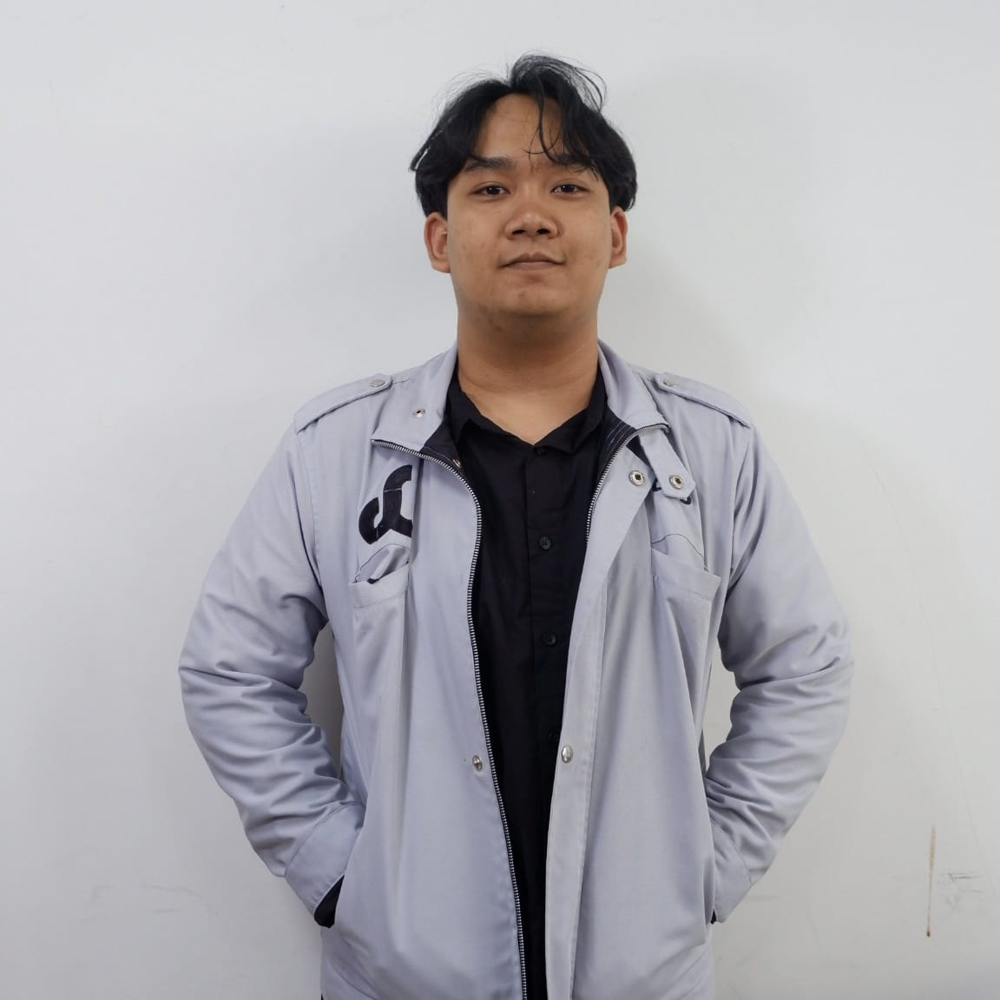

Engineering intelligent
industrial automation systems.
I'm Bustan Nabiel Maulana, a final-year Electrical Engineering student at Telkom University passionate about industrial automation, embedded systems, instrumentation, robotics, IoT, and applied AI. Experienced in hands-on industrial instrumentation at PT Semen Indonesia (SIG) and active research/laboratory coordination across campus.

Bustan Nabiel Maulana
Final-Year Electrical Engineering Student at Telkom University | Industrial Automation, Embedded IoT & AI Systems
Undergraduate Electrical Engineering student at Telkom University passionate about industrial automation, embedded systems, instrumentation, robotics, IoT, and applied AI. Experienced in hands-on industrial instrumentation at PT Semen Indonesia (SIG) and active research/laboratory coordination across campus.
Specialized Competency Matrix
Industrial Automation & Instrumentation
Hands-on experience in industrial instrumentation maintenance, load cell calibration, control valve inspection, and PLC/HMI/SCADA system interconection at PT Semen Indonesia (SIG).
Embedded Systems & IoT Engineering
Architecting end-to-end connected systems using ESP32/Raspberry Pi microcontrollers, sensor interfacing, Firebase cloud integration, and real-time monitoring dashboards.
Computer Vision & Applied AI
Implementing real-time object classification with TensorFlow Lite and OpenCV on edge devices. Applying ML algorithms like KNN for anomaly detection in power monitoring systems.
Interactive Experience Deck
Select an activity from the interactive list to inspect detailed achievements and media
Interactive Project Showcase
Select any project from the directory on the left to inspect technical blueprints and media
Professional Certificates
Curved 3D Coverflow slider — swipe or click arrows to rotate certificates